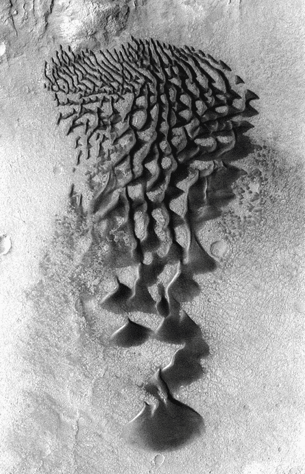
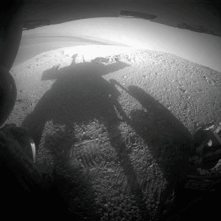
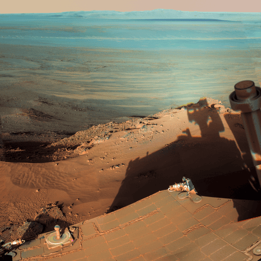
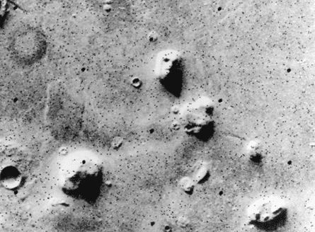
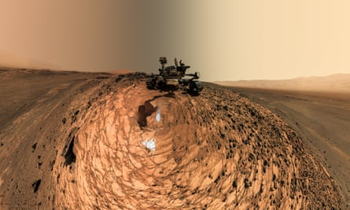
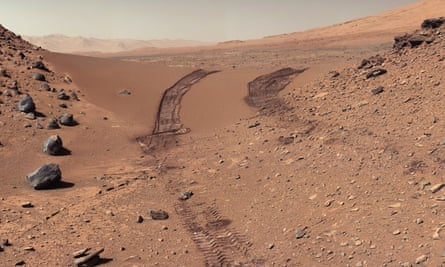
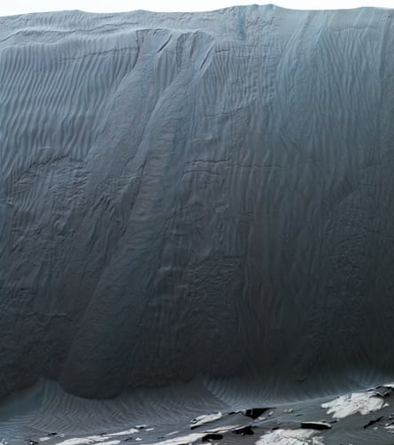
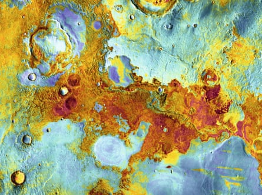

L ast September, Elon Musk used the social media platform he had bought for £35bn to remind the world that he had bigger things on his mind than the forthcoming US presidential election. “The first Starships to Mars will launch in two years when the next Earth-Mars transfer window opens,” he posted on X. “These will be uncrewed to test the reliability of landing intact on Mars. If those landings go well, then the first crewed flights to Mars will be in four years.”
Then came a grand restatement of even more impressive intentions. “[The] flight rate will grow exponentially from there,” he wrote, “with the goal of building a self-sustaining city in about 20 years.” For those who still doubt whether this plan ought to be quite the priority he evidently thinks, he finished with a familiar insistence: “Being multiplanetary will vastly increase the probable lifespan of consciousness, as we will no longer have all our eggs, literally and metabolically, on one planet.”
Although Mars’s volcanoes are no longer active, some of its dune fields are. Wind blowing from the north drives dunes of dark basaltic sand across the floor of a small crater
Musk’s company SpaceX, founded in 2001 and now valued at £350bn , currently makes most of its money from launching satellites. Its most renowned rocket is the Starship, credited with being the largest and most powerful spacecraft ever built, whose sixth test flight was watched by a gleeful Donald Trump (its fifth saw the Starship’s rocket booster caught by “mechazilla” robotic arms, a moment that sent Musk’s celebrity to new heights). This invention, Musk insists, holds the key to SpaceX’s so-called Mars colonisation program, and the prospect of human beings living on the red planet. There is currently only one snag: most Mars experts doubt that his current timeline is in any way realistic – although many of them credit him with returning Mars to the public consciousness, and beginning the slow and difficult process of getting human beings on to its surface.
Top: the Mars Exploration rovers Spirit and Opportunity, which were launched in 2003, were not capable of shooting ‘selfies’ but frequently caught their own shadows in late afternoonsAbove: on 9 March 2012, Opportunity stood on the rim of Endeavour crater, with an unobstructed view of its far side 14 miles away. The bedrock in the rim was the oldest Opportunity investigated and was formed during Mars’s earliest, wettest geologic era. The camera’s sensitivity means the colour is exaggerated
In that sense, Musk and his hype are the latest chapter in a story that goes back six decades. In 1964, a Nasa invention called Mariner 4 captured the first fuzzy surface images of Mars. Seven years later, both the US and Soviet Union had launched missions that successfully orbited the planet: one Soviet lander made it on to the surface but conked out after a couple of minutes, but Nasa’s Mariner 9 orbiter revealed topography that showed that Mars had tantalisingly Earth-like qualities. And then, in 1976, Nasa’s Viking 1 and Viking 2 landers not only analysed soil samples on the surface, but transmitted stunningly vivid images of where they had touched down, showing a vast, rust-coloured, rocky expanse and pastel-coloured skies.
I am old enough to remember the awed feeling that came from looking at those pictures: to use a modern word, the red planet instantly became relatable. It was not hard to imagine human beings one day travelling there, and making their way around its arid-looking landscape; nor was it inconceivable that in such an Earth-like place, we might find signs of life: from the past – or, even more amazingly, the present.
In 1980, the Viking 1 orbiter was tasked with taking a set of colour images covering the entire globe of Mars. Eventually, in 1992, Nasa released a seamless, digital, rectangular colour map of the planet, from which these four global views were made. They have an unusual point of view, as though seeing Mars from a spacecraft travelling only 2,000km above it
The details of Nasa’s Mars story are explained to me in the course of a fascinating Zoom call with Jim Green, a relentlessly upbeat and amazingly talkative 73-year-old who joined the agency in 1980, and eventually became the head of its Planetary Science Division, overseeing the launch of probes to Venus and Jupiter – and some of Nasa’s most ambitious explorations of Mars. He retired from Nasa in 2022, but still works in the same field, and happily admits to being a Mars obsessive: for a new book of photographs of the planet from the Nasa archives, he has written an incisive essay about the history of missions to Mars, and the planet’s 4.6bn-year history.
“The theme of Viking was, ‘Let’s find life,’” he tells me. “But what we learned was that it was too big a step. And the reason why is that we put those down in the safest area we could think of. Imagine Martians landing on Earth: ‘Let’s land in this area of northern Africa that looks like it’s flat and safe, and we’ll look for life there.’ And they land in the Sahara desert and don’t find it. Today we know that where we landed was the worst place to go.”
This Viking image of some nondescript mounds sparked an early internet conspiracy theory that the ‘face’ was built by sentient Martians. In fact, it’s just another mountain
There was a pause in Nasa’s Mars exploration between 1982 and 1996, as careful work went into starting to correct that mistake. The 1990s saw a run of failures – not just for the US, but Mars missions launched by Russia and Japan. But then two successful landings began to revive interest in the planet – and in 2001, having entered Mars’s orbit, a US spacecraft called Mars Odyssey found evidence of “potential subsurface water”. Nasa quickly doubled down on the search for both previous locations of H20 – where, Green says, there could be “all kinds of indications of past life” – and areas of the planet where water might still be present.
In 2004, a Nasa rover called Opportunity discovered the mineral hematite, a clear sign that water had once been around. It did so while travelling 28 miles across the surface, over more than 14 years – and capturing stunning images such as the view from Mars’s Endeavour crater towards a blue horizon 14 miles away. Even more than those photographs from the Viking missions, these pictures showed a planet-scape at once eerily alien and tantalisingly familiar.
Top: self-portraits of the Curiosity rover, launched in 2011, were taken with an arm-mounted camera. This unusual image was shot on 5 August 2015 at a sample site named Buckskin – just like a human, the rover cannot see its own ‘elbow’ or ‘hand’ while taking a selfieAbove: tracks made by Curiosity across a sand drift at Dingo Gap, 2014
The highpoint of Green’s time at Nasa was the successful landing of Curiosity, a rover the size of a family car that launched in November 2011, and landed on Mars the following August: he has vivid memories of anxiously watching its final descent from a control room, keenly aware that his career was hanging in the balance. “It either landed on the surface disassembled, and I got fired, or it worked: we only found out when we got the signal that it had landed.”
Everything went as planned, and Nasa now had “a fabulous machine that was going to revolutionise our knowledge”. Curiosity not only sent back crystal-clear footage of the surface – 5,000 people gathered on Times Square to watch its first video broadcast – but found carbon, nitrogen, oxygen, phosphorus and sulphur. To quote from Green’s essay, this was evidence “that Mars, with its extensive early water resources, must have been a habitable environment sometime in its distant past”.
What he is still waiting for is an even greater revelation. “Mars is the place that I think we will answer the question, are we alone?” he says. “And it’s really going to require humans to go around the planet and find extant life .” He emphasises those two last words, to convey what a gamechanger this would be. “That life isn’t going to be on the surface. It’s going to be in underground aquifers.” Any Martian organisms, just to be clear, would probably be microbial, but their discovery would still represent an almost unimaginable scientific and cultural milestone. So is he really convinced there is life there? “Oh, I think there is. Today .”
Green’s current obsession is theoretical work on terraforming Mars: modifying its climate and atmosphere to make it more favourable to human habitation. In any practical terms, it is difficult to explain what this would entail and the technological leaps it would require, but the essential prerequisite would be a vast magnetic shield between Mars and the Sun, which would allow the planet to trap more heat, and increase its atmospheric pressure – both of which would then open up the surreal possibility of humans moving freely around.
Top: many craters on Mars appear to have been filled with sediment at one time. Long dry, the sediments are being eroded by windblown sand. Some layers are more resistant to erosion than others, producing the stair-stepped ridges and valleys seen here within Danielson craterAbove: between Curiosity’s landing site and the rocks at the foot of Gale crater’s central mound sprawled a huge field of dark sand dunes, made of pulverised grains of volcanic rock. Curiosity approached the steep slope of a dune the team named Namib on 17 December 2015. The horizontal fissures and alcove-shaped scarps show that the dune is actively moving
“You have to think of terraforming in steps,” he says. “So what’s the first level of terraforming? We need to get the atmospheric pressure up. Today it’s at six millibars. If we can get it to 60, then we don’t need spacesuits to walk around on the surface. Humans will have much greater mobility, and our machines will work better.”
These, presumably, are the kind of visions that motivate Elon Musk , which brings me to an unavoidable question: what does Green make of SpaceX’s ambitions?
“Elon has some wonderful attributes. He really is quite a space geek, thinking about the future and wanting it to come sooner rather than later, and doing everything we can to make that happen. But he’s also very unrealistic in his timescales. We’re not going to be landing 30, 40, 50 people on Mars any time soon.”
And is the key problem not so much our technology, as the fact that we simply don’t know enough about what will await the first humans who make the journey? “We’re getting close. Probably in the next eight to 10 years we’ll have all the knowledge necessary for humans to land. We’ve been struggling with finding the landing site since 2015, and we’re still not there yet. Our concept is we’re going to land in what’s called an exploration zone: an area about 200km in diameter.”
He pauses for a second, before conjuring up images of what humans will do when they finally get to traverse the empty landscapes all those Nasa devices have taken pictures of. “We’re going to mine ice and get water. We’re going to take the minerals and we’re even going to make medicines out of them. We’re going to do all the stuff that we need to do to survive on that planet. And that’s in an area we’re going to go back to for hundreds of years.
The spacecraft Mars Odyssey brought new imaging technology to photographing the planet, which meant the surface could be seen in both day and night. In 2006, daytime images (which show topography in black and white) were combined with night-time views (which show temperature, from cold blue to warm red). At night, bedrock exposed on the Meridiani Planum plain and in crater rims retains heat, so is relatively warm compared with dust-covered areas
“We don’t know where the exploration zone is. We had 55 candidates. And right now, it’s probably down to 45, but it’s not down to the top three or four. I think we have another 10 years. And then we’ll be able to say, ‘This is it.’”
In everything he says there is one clear belief: that human beings will make it to Mars – maybe not quite as quickly as Musk claims, but sooner than a lot of people think. “Well, I want it done in my lifetime,” Green says, with a grin. “I’ve always told my daughter I’ll be a centurion, for sure. So in the next 25 years. That would be great.”